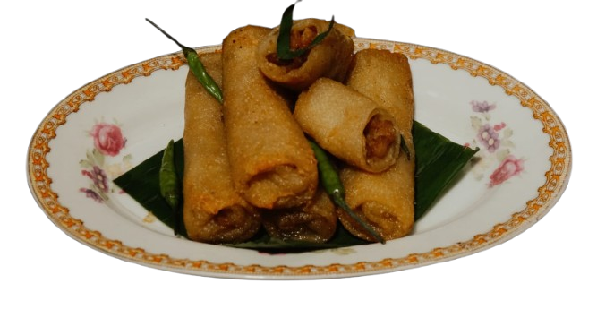

Selamat Datang
Sejarah Sosis Solo
Sosis Solo adalah salah satu makanan khas Indonesia yang terbentuk dari akulturasi budaya Jawa dan pengaruh kolonial Belanda, yang mengadaptasi sosis Eropa dengan bahan-bahan lokal dan rempah-rempah khas Jawa. Dibungkus dengan kulit telur dadar tipis dan digoreng, Sosis Solo menjadi makanan ringan yang lezat dan populer di Indonesia.